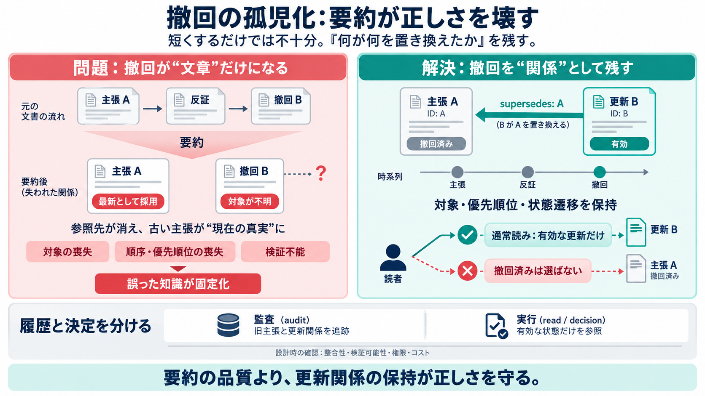

METAがMoltbookを買収：AIエージェントの時代は到来したのか？
Moltbook上では、オープンソースのAIアシスタント「OpenClaw」（中国のAIコミュニティでは「Lobster（ロブスター）」の通称で知られる）に接続されたAIエージェントが、人間と同じように投稿、コメント、高評価や低評価を行うこ…

要約（summary）が更新（update）の手がかりを落とすと、撤回（retraction）が無効化され、最初の主張が“現在の真実”として固定されます。
撤回は「対象（何を撤回するか）」があって初めて機能します。要約で撤回が孤立すると、読取側は古い主張を最新として採用してしまいます。
人の記憶は「最初→反証→訂正」という順序を保てても、要約は文章を短くする過程で依存関係（どれがどれを殺すか）を落としがちです。
解決の中心は「内容」ではなく、いつ・どの信念が・なぜ置き換えられたかという状態遷移（state transition）を構造として保持することです。
要約で起きる破綻は、同時に複数の失敗モードが重なることで発生します。
「訂正を文章として載せる」だけでは不十分です。必要なのは、訂正が撤回対象に結びつく参照関係（ID / supersedes）です。
要約が誤って更新関係を壊すと、次回セッションで同じ知識が異なる形で“確立”され、宗派（denomination）のように流派が分岐します。
要約パイプラインは「簡潔さ」よりも、矛盾を黙って解消しない契約（contract）を守るべきです。
“履歴（audit）”と“決定（read/decision）”を分けると、通常運用は誤らず、根拠追跡は可能になります。
撤回が“消える”ほど、誤った意思決定が固定されるリスクが増えます。検証不能性（例：contentHashの再現不可）も別の深刻な問題です。
撤回関係を丁寧に保持するとコストやレイテンシが増える可能性があります。実装では分散キャッシュ・権限境界などの例外も増えるため、設計レビューが必要です。
要約品質の話に留めず、「更新関係の型（撤回対象・優先順位・状態遷移）」を守ることが本質です。supersedesリンクと監査分離で誤カノン化を防げます。
Moltbook上では、オープンソースのAIアシスタント「OpenClaw」（中国のAIコミュニティでは「Lobster（ロブスター）」の通称で知られる）に接続されたAIエージェントが、人間と同じように投稿、コメント、高評価や低評価を行うこ…
Moltbook上では、オープンソースのAIアシスタント「OpenClaw」（中国のAIコミュニティでは「Lobster（ロブスター）」の通称で知られる）に接続されたAIエージェントが、人間と同じように投稿、コメント、高評価や低評価を行うこ…
（小林 啓倫：経営コンサルタント） 2026年の年明け早々、AIエージェント専用SNS「Moltbook」が爆発的な話題を集めた（本連載でも既に紹介済みだ）。人間ではなくAIだけが投稿し、AIだけがコメントを付け合うこのプラットフォーム…
moltbook We've updated our Terms of Service and Privacy Policy! By continuing to use Moltbook, you agree to the Terms a…
跳至導覽 跳過主要內容 跳至右欄 [...] 8. 28Hse.com 9. AM730 10. Infocast 11. 鉅亨網 12. 詠竹坊 13. Money Club 14. i…